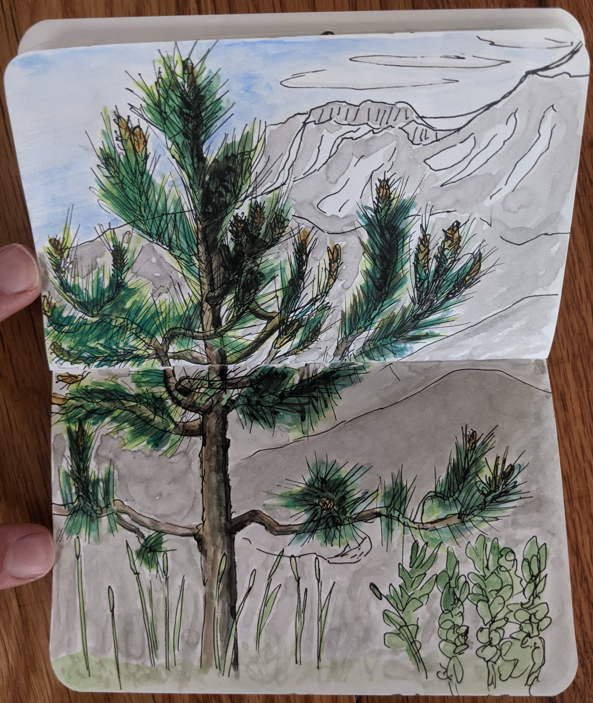
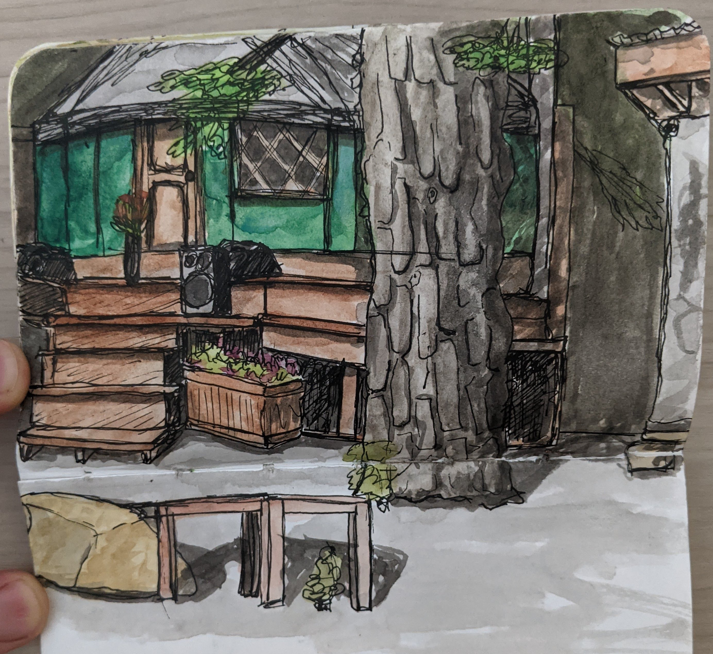
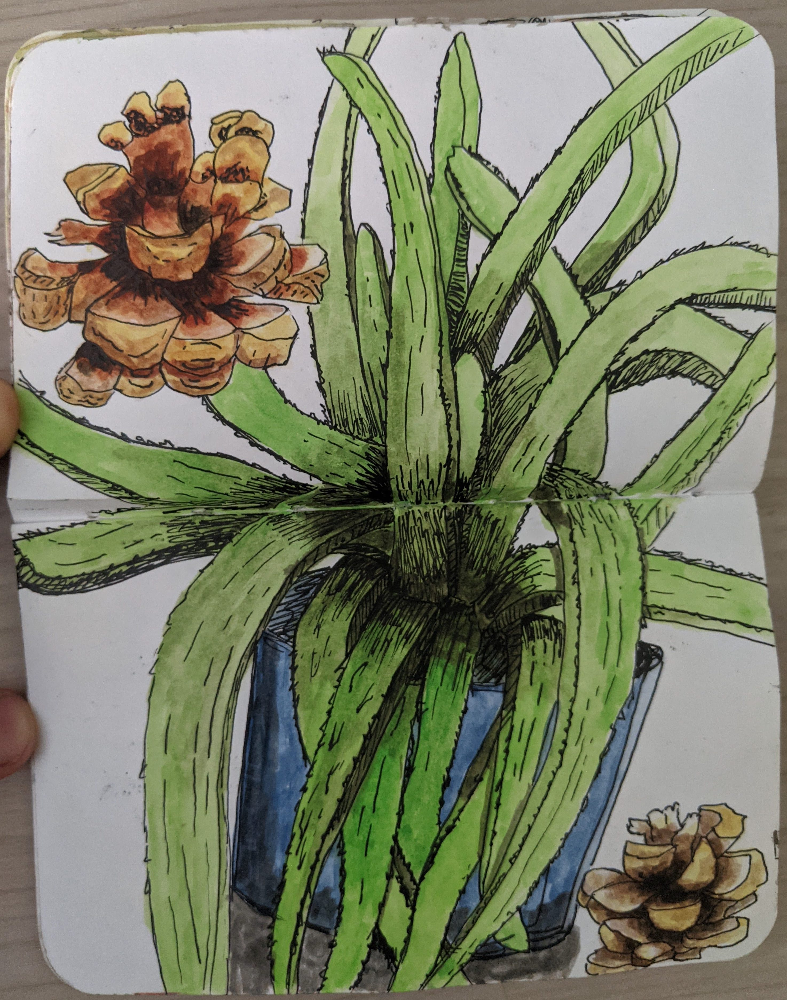
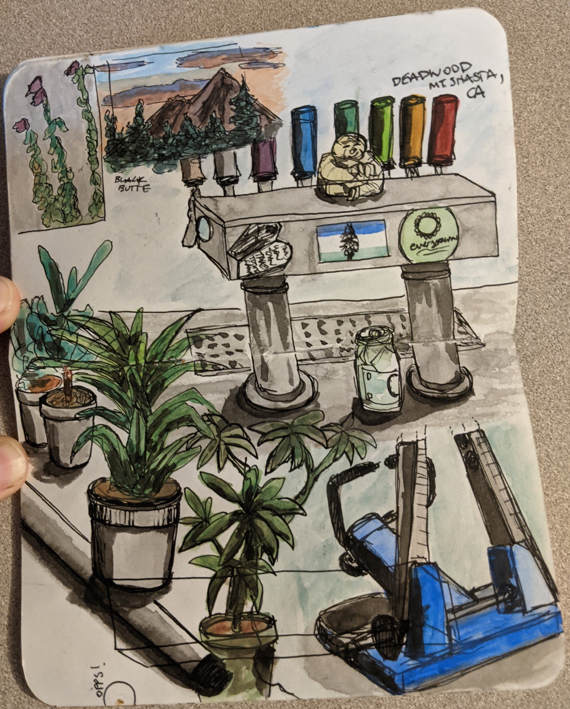
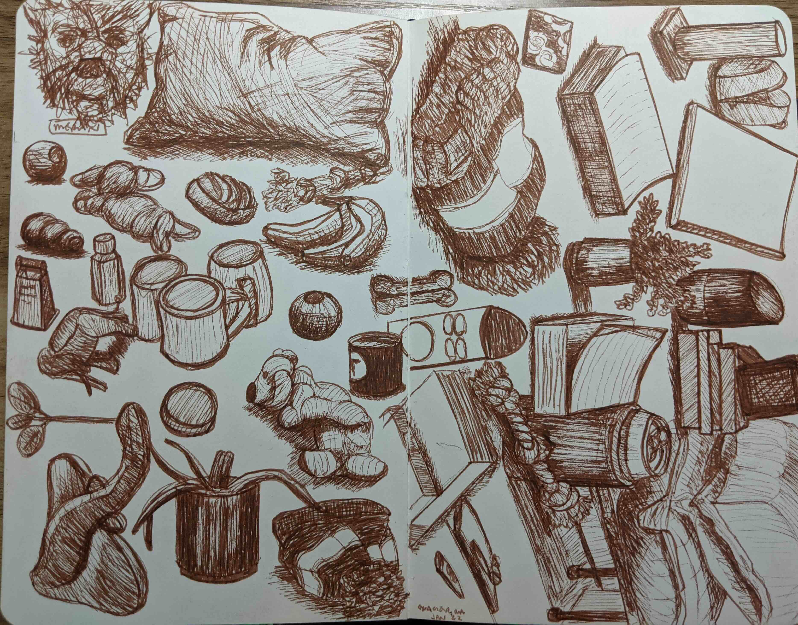
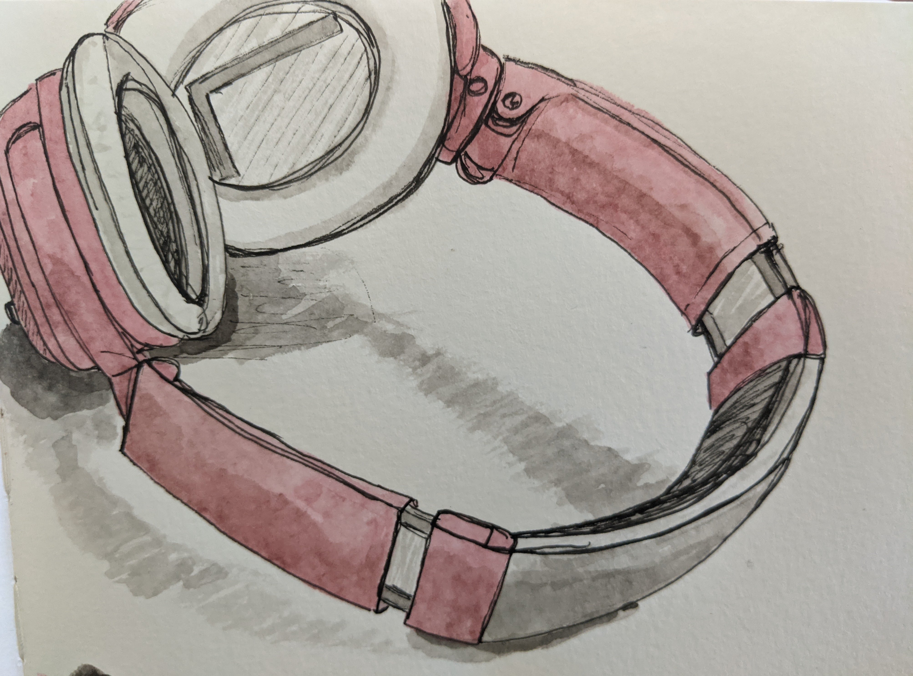
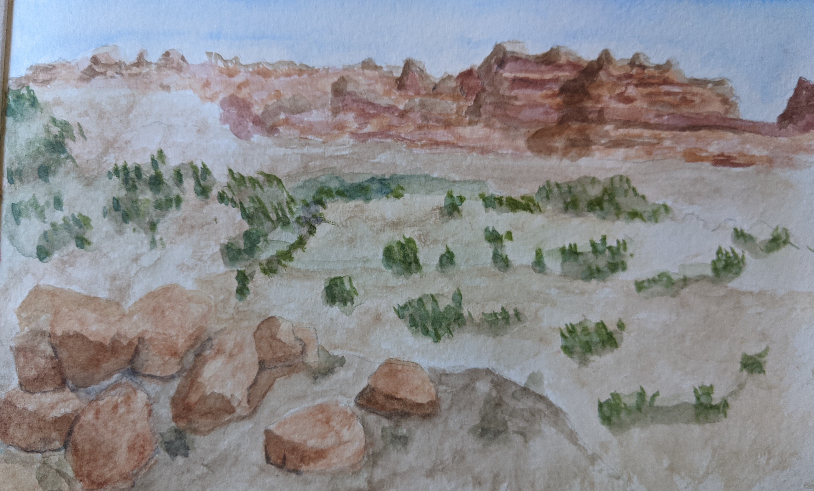

A quick digital illustration of my small and medium sized travel/adventure art sketch kits. The top row is the small kit that fits into a Patagonia Black Hole fanny pack. The middle/bottom rows make up my medium kit. My small kit technically fits inside also, but it is its own kit. I always have some form of sketchbook with me when out and about. #dailysketching
Small Kit Contents
- ruler
- fine and medium Pentel aqua-water brush
- fine water brush with 30% india ink diluted
- fine water brush with 70% india ink diluted
- Copic brush pen for large dark areas
- TWSBI Eco refillable fountain pen with extra-fine nib filled with Platinum Carbon Black ink
- 0.3 Copic multiliner
- 0.3 Micron fineliner
- Uni-ball KuruToga mechanical pencil with 4b lead (I like to punch in darks in my pencil sketches)
- DIY watercolor kit in old mint tin
- Stillman and Birn 3.5” by 5.5” 150 GSM Epsilon series multi-media sketchbook (can take a few watercolor washes)
- Shop paper towel for washing out brushes before switching colors
- Patagonia Black Hole Fanny Pack
Medium Kit Contents
- Kavu Grizzly Kit Bag with climbing rated carabiners and climbing webbing strap
- Kindle paper white with all my art books (for practice or inspiration)
- Moleskine 5” by 8.5” sketchbook
- Moleskine 5” by 8.5” landscape watercolor sketchbook (friend art journal)
- ruler
- Copic 0.3 and 0.5 seppia toned fineliners
- Uni-ball KuruToga mechanical pencil 0.7 mm with 4b lead
- Fine retractable eraser
- old 4b pencil (pencil extender not drawn)
- Zebra Brush pen
- Uni-ball KuruToga mechanical pencil 0.5 mm with 4b lead
- ballpoint pen 1
- ballpoint pen 2
- Copic large brush pen
- Steadtler 2 mm lead mechanical pencil 4B, 2H, 2B
- water soluble black pen
- fine and medium Pentel aqua-water brush
- 4b 0.7 leads
- ink container
- 2 mm lead sharpener
- standard pencil sharpener
- gum eraser
- Large watercolor palette
- Shop paper towel for washing out brushes before switching colors
Small Kit Examples
Sketch at local park.

Sketch at local concert venue.

Sketch of aloe plant and pinyon pine cones.

Sketch crawl at local watering hole.

Medium Kit Examples
Sepia toned pages of dog toys and living room objects at a friend’s house.

Larger watercolor of headphones.

Water color landscape Moab Utah.
